MEM1 · Spændinger og tøjninger. Videoerne tegnes live i din browser og fylder næsten ingenting.
Ét begreb pr. video, i slidernes rækkefølge.
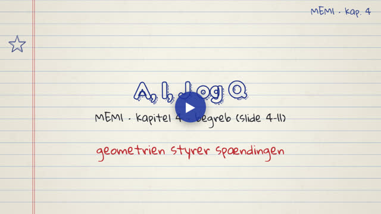
Hvilken tværsnitsstørrelse styrer hvilken spænding, tyngdepunkt, I, J, Steiners sætning og I-profiler.
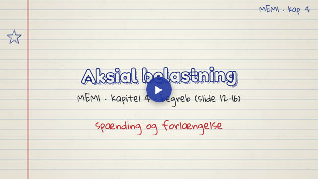
σ = P/A, δ = PL/(AE), styrke mod stivhed og fjederkonstanten k = AE/L.
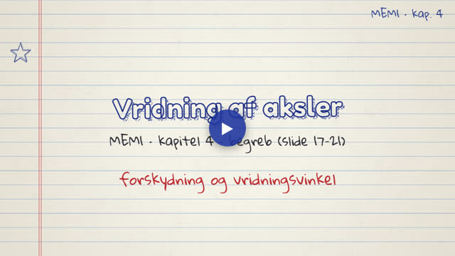
τ = Tr/J, τ_max for massive og hule aksler, vridningsvinklen θ = TL/(JG) og de to designkrav.
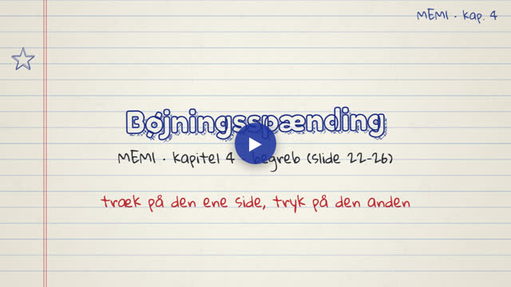
σ = My/I, den neutrale akse, modstandsmomentet S = I/c og bjælkens orientering.
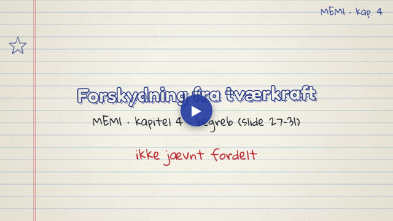
τ = VQ/(Ib), fordelingen over tværsnittet og eksemplet fra slide 28.
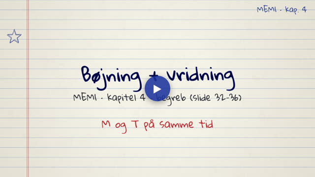
Spændingstilstanden på en akseloverflade med både M og T, hovedspændinger og Mohrs cirkel.
Eksempler og eksamensopgaver fra kapitlet, trin for trin.
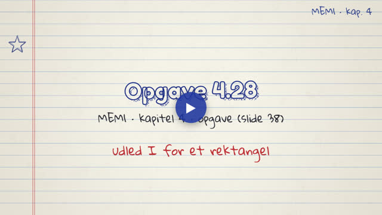
Udledning af I_x = ab³/12, I_y = ba³/12 og J for et rektangel.
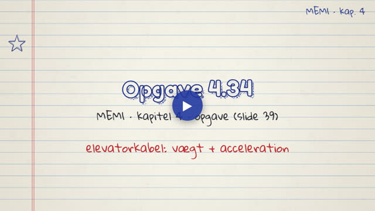
Spænding og forlængelse i et elevatorkabel, først i hvile og så under acceleration.
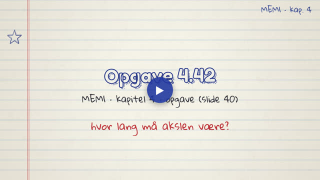
Største længde af en hul stålaksel, når vridningsvinklen højst må være 5°. L_max = 1,26 m.
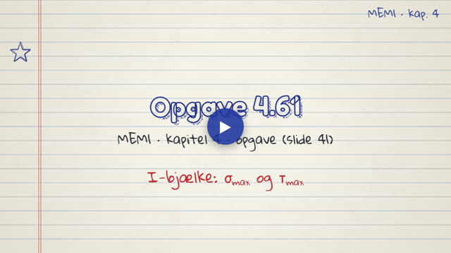
I-bjælke med M = 3000 Nm og V = 1000 N: σ_max = 19,7 MPa og τ_max = 1,74 MPa.
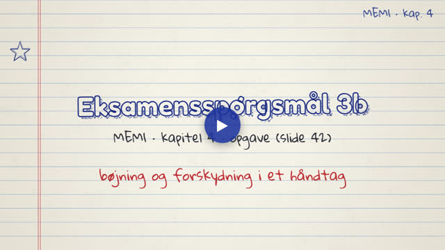
Eksamensspørgsmål 3b: rektangulært håndtag, σ_max = 300 MPa og τ_max = 50 MPa.